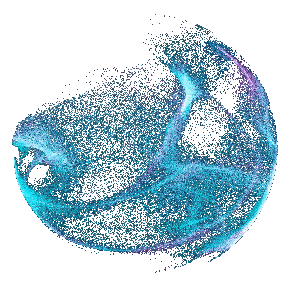

State Support Mission
Viksit Rajya for Viksit Bharat — an initiative of NITI Aayog
Empowering States through SITs and LKIs for Viksit Bharat.
Partnerships with States and UTs to stregthen institutions, leverage data, share knowledge and drive inclusive and sustainable transformation.
“NITI Aayog ends one size fits-all Planning”


{{ heroTQuote }}
State Support Mission
Viksit Rajya for Viksit Bharat — an initiative of NITI Aayog
Empowering States. Accelerating Transformation.
A collaborative platform helping States and Union Territories strengthen institutions, leverage data and knowledge, and unlock their unique pathways to development.
Stronger States. Stronger India.
State Support Mission partners with States and UTs to build institutions, leverage data, share knowledge, and drive inclusive and sustainable transformation.
Driven handshakeKnowledge
Partnerships track_changesBetter Outcomes
for Citizens
Empowering States, Enabling Viksit Bharat.
The State Support Mission (SSM) of NITI Aayog is a central sector scheme aimed at strengthening cooperative federalism and supporting States and UTs in achieving the developmental priorities of Viksit Bharat@2047. It facilitates the establishment and strengthening of multidisciplinary State Institutions for Transformation (SITs) and supports evidence-based planning, policy formulation, monitoring and collaboration with Knowledge Institutions.
SIT & LKI across India
Note: Hover over a state to see SIT and LKI details or select below.
{{ selIntro }}
What the Mission sets out to do
How SSM delivers impact
Each component of the Mission addresses a distinct aspect of State support. Together, they create an integrated framework that strengthens institutions, promotes collaboration, and enables evidence-based policymaking for better development outcomes.
Tools that bring data to the grassroots
A suite of digital tools developed by NITI Aayog to enable evidence-based planning, data-driven decision-making, and cross-learning among States and UTs.
Workshops across States
The State Support Mission fosters continuous learning through workshops, policy dialogues, and collaborative engagements that bring together States, SITs, Leading Knowledge Institutions, and domain experts to exchange ideas, share best practices, and strengthen institutional capacity.
Publications & other documents
Different stakeholders engage with SSM along different paths

Who’s Who
Meet the team working behind the State Support Mission to support States, strengthen institutions, and turn evidence into action.